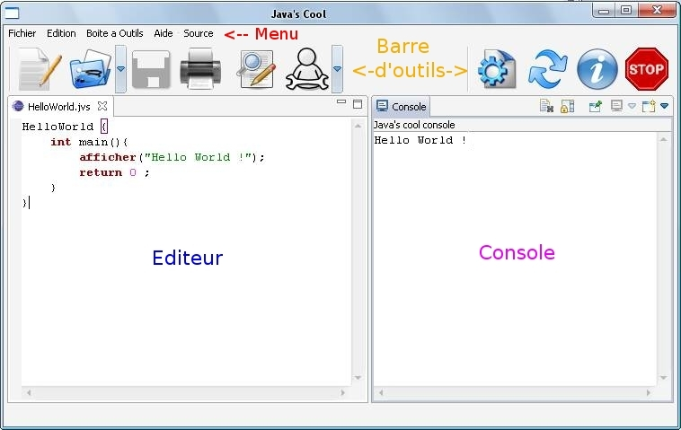
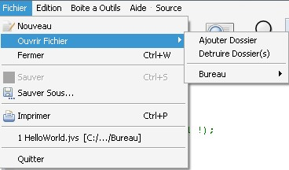
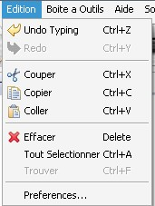
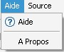
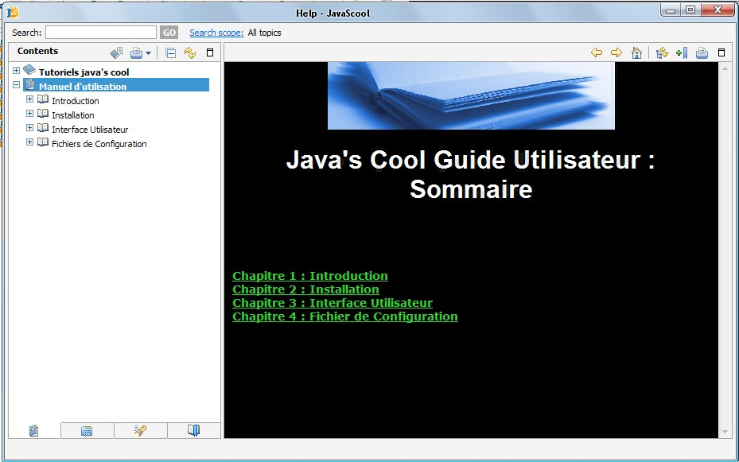
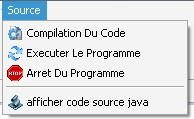
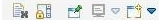

Java's Cool Guide Utilisateur : Interface

Vue de l'application Java's Cool.
Nous allons détailler chacun des modules qui composent l'interface.
Menu
De droite à gauche :
Fichier

Nouveau/New :
Permet d’ouvrir une page vierge dans l’éditeur de texte pour écrire un nouveau code source. Si une page est déjà ouverte, un onglet apparaîtra avec comme nom ‘TmpX’ où x est un numéro. Lors de l’utilisation de ‘nouveau’, la page crée n’existe pas sur le disque dur de l’ordinateur, il faut absolument l'enregistrer. Lors de cette opération, l’enregistrement se fait en mode ‘enregistrer sous‘.
Ouvrir fichiers/Open files :
Ajouter Dossier :
Lorsque que l'on clique dessus, une fenêtre apparait composée de deux champs à compléter pour définir un nouveau dossier favoris lequel pourra être atteint plus rapidement via la liste des dossiers. Le premier champs est le chemin du dossier. Via le bouton chercher situé sur sa droite, l'utilisateur peut naviguer dans ses disques durs et dossiers pour trouver celui pour lequel il souhaite un accès rapide ou même si il le désire créer un nouveau dossier. Le second champ est le nom que l'on souhaite attribuer à ce raccourci.
Supprimer Dossier :
D'un clic une fenêtre apparait contenant la liste des raccourcis. Il suffit de cocher ceux que l'on souhaite supprimer et de valider.
Liste des dossiers :
Dans cet espace sont affichés tous les raccourcis. Lorsque la souris en survole un, deux choix sont offerts 'sauver sous' ou 'ouvrir'. Chacune des actions ammène directement au dossier qui a été affecté au raccourci avec la possibilité de sauvegarder en nommant le fichier ou d'ouvrir un fichier source.
Fermer/Close :
Ferme l’éditeur en cours (pas l'application). Si jamais le code source contenu dans l’éditeur a été modifié, un message apparaît pour avertir l’usager et lui demander si il ne souhaite pas enregistrer les modifications.
Sauvegarder/Save :
Enregistre le code source dans le fichier dont le nom est indiqué dans l’onglet de l’éditeur. Le lieu de l'enregistrement est celui où se situe le fichier.
Sauvegarder sous/Save as :
Permet de nommer et de spécifier l’emplacement du fichier qui contiendra le code source.
Imprimer/Print :
Permet d'imprimer le code source de l'éditeur actif.
Réouverture/Reopen :
Chaque code source ouvert s'ajoute à la liste des documents déjà ouverts. Ainsi si l'on ferme l'un d'entre eux et qu'on souhaite l'ouvrir de nouveau, il suffit juste de cliquer sur son nom.
Quitter/Exit :
Ferme l'application. Si des fichiers sources n'ont pas été sauvegardés, une proposition de sauvegarde sera faite à l'usager.
Edition

Défaire/Undo :
Permet d’annuler la dernière saisie ou manipulation effectuée au sein de l’éditeur (collage ou saisie ). Par exemple si l’on a écrit : "abc def ghi" et que l’on clique une fois sur défaire, on aura l’effacement de 'ghi'. Lors d’un second clic ce sera 'def' qui s’effacera sous condition d’avoir tapé les mots dans l’ordre.
Refaire/redo :
Permet de revenir sur un ‘Defaire’. Dans l’exemple au dessus, si l'on se rend compte que l'on a commis un défaire de trop, en cliquant sur 'Refaire' une première fois, on refera apparaître au sein de l’éditeur 'def', une seconde fois c'est 'ghi' qui réapparaîtra.
Couper/Cut :
Lorsque du texte est sélectionné et que l'on appuie sur 'Couper', ce dernier disparaît afin de pouvoir être collé à un autre endroit. Si deux ‘couper’ sont effectués d’affilée les données du premier ‘couper’ sont perdues.
Copier/Copy :
A la différence de ‘Couper’ le texte sélectionné ne disparaît pas. Le but est le même.
Coller/Paste :
Place le texte qui a été coupé ou collé là où se situe le curseur au sein de l’éditeur de code source.
Tout selectionner/Select all :
Sélectionne tous le texte de l’éditeur en cours afin de pouvoir être copié, collé ou même effacé en une seule opération.
Trouver-Remplacer/Find-Replace :
Permet de trouver un mot dans le texte en déplaçant le curseur de l’éditeur à chacune de ses apparitions et si besoin est de le remplacer par un autre mot. Le champ remplacer peut être vide si aucun remplacement n’est souhaité. La recherche s’effectue à partir de la position du curseur en avançant dans le code source (forward), ainsi si il est au milieu et que l’on cherche le mot ‘HelloWorld’, les apparitions de ce dernier précédent le curseur ne seront pas mises en valeur. Il faudra donc faire une recherche en arrière (backward) pour les trouver.
Astuce : Le plus simple lors d’une recherche est d’avoir le curseur au début du document afin d’effectuer une recherche dans toute la page.
Préferences/Preferences :
Personnalise la coloration syntaxique selon le choix de l'utilisateur. En cas d'égarement, il suffit d'utiliser Restore Default pour revenir à la configuration d'origine.
Boîte à outils
 Ce menu se remplit de manière dynamique au démarrage de l’application à partir du fichier de configuration des macros. Pour savoir comment ajouter des macros, rendez vous à la partie dédiée (voir Chapitre Configuration).
Chacun des menus dans la boîte à outils correspond à une catégorie. Une fois celle-ci choisie, on a accès au nom de toutes ses fonctions.
En cliquant dessus, la signature de la fonction s’ajoute là où se situe le curseur dans l’éditeur de code source.
Ce menu se remplit de manière dynamique au démarrage de l’application à partir du fichier de configuration des macros. Pour savoir comment ajouter des macros, rendez vous à la partie dédiée (voir Chapitre Configuration).
Chacun des menus dans la boîte à outils correspond à une catégorie. Une fois celle-ci choisie, on a accès au nom de toutes ses fonctions.
En cliquant dessus, la signature de la fonction s’ajoute là où se situe le curseur dans l’éditeur de code source.
Aide

Help Content :
Permet d'accéder aux tutoriaux ainsi qu'au guide utilisateur.

Pour faire apparaître les pages d'aide, il faut cliquer sur le + sur la droite. Il ne reste plus qu'à choisir la rubrique à laquelle on veut accéder.
A propos de Java's Cool :
Donne des renseignements techniques sur l'application.
Source

Permet d'acceder à des fonctionnalités liées à la compilation et à l'éxécution des programmes.
Compilation du source
Si l’utilisateur est en mode débutant, son code se verra transformé en java dont le code sera enregistré dans un fichier au même endroit et avec le même nom que le fichier d'origine à l'exception de l'extension qui sera .java avant d’être compilé par le compilateur JAVAC.
Il peut se produire lors de cette opération des messages d’erreurs liés au code source si il ne respecte pas certaines règles d’écriture. Les erreurs seront affichées dans la console et pour la plupart traduites en français grâce à un fichier de configuration qui peut-être amélioré (voir Chapitre Configuration).
Executer le programme
Après l’avoir compilé, le programme peut-être lancé. Les résultats s’afficheront dans la console. SI il y a une interaction avec l’utilisateur, il faudra taper les réponses au sein de la console.
Arrêt du code programme
Permet d’arrêter l’exécution d’un programme si jamais celui-ci ne répond plus où que l’on se rend compte qu’il ne fait pas ce que l’on souhaite.
Afficher code source java
Affiche dans la console le code source java généré à partir du code jvs de l'editeur actif.
Barre d'outils
Nouveau/New : Permet d’ouvrir une page vierge dans l’éditeur de texte pour écrire un nouveau code source. Si une page est déjà ouverte, un onglet apparaîtra avec comme nom ‘TmpX’ où x est un numéro. Lors de l’utilisation de ‘nouveau’, la page crée n’existe pas sur le disque dur de l’ordinateur, il faut absolument l'enregistrer. Lors de cette opération, l’enregistrement se fait en mode ‘enregistrer sous‘.
Ouvrir fichiers/Open files : Lorsque que l'on clique dessus, une fenêtre apparait composée de deux champs à compléter pour définir un nouveau dossier favoris lequel pourra être atteint plus rapidement via la liste des dossiers. Le premier champ est le chemin du dossier. Via le bouton chercher situé sur sa droite, l'utilisateur peut naviguer dans ses disques durs et dossiers pour trouver celui pour lequel il souhaite un accès rapide où même si il le désire créer un nouveau dossier. Le second champ est le nom que l'on souhaite attribuer à ce raccourci.
Si l'on clique sur la flèche à coté du bouton, tous les raccourcis seront affichés. Lorsque la souris en survole un, deux choix sont offerts 'sauver sous' ou 'ouvrir'. Chacune des actions amène directement au dossier qui a été affecté au raccourci avec la possibilité de sauvegarder en nommant le fichier ou d'ouvrir un fichier source.
Sauvegarder/Save : Enregistre le code source dans le fichier dont le nom est indiqué dans l’onglet de l’éditeur. Le lieu de l'enregistrement est celui où se situe le fichier.
Imprimer/Print : Permet d'imprimer le code source contenu dans l'éditeur courant.
Trouver-Remplacer/Find-Replace : Permet de trouver un mot dans le texte en déplaçant le curseur de l’éditeur à chacune de ses apparitions et si besoin est de le remplacer par un autre mot. Le champ remplacer peut être vide si aucun remplacement n’est souhaité. La recherche s’effectue à partir de la position du curseur en avançant dans le code source (forward), ainsi si il est au milieu et que l’on cherche le mot ‘HelloWorld’, les apparitions de ce dernier précédent le curseur ne seront pas mises en valeur. Il faudra donc faire une recherche en arrière (backward) pour les trouver.
Astuce : Le plus simple lors d’une recherche est d’avoir le curseur au début du document afin d’effectuer une recherche dans toute la page.
Boîte à outils/Toolbox : Il faut cliquer sur la flèche à coté de l'icone. Ce menu se remplit de manière dynamique au démarrage de l’application à partir du fichier de configuration des macros. Pour savoir comment ajouter des macros, rendez vous à la partie dédiée (voir Chapitre Configuration).
Chacun des menus dans la boîte à outils correspond à une catégorie. Une fois celle-ci choisie, on a accès au nom de toutes ses fonctions et lorsqu’on laisse le curseur sur l’une d’entre elles, une courte description de ses effets apparaît.
En cliquant dessus, la signature de la fonction s’ajoute là où se situe le curseur dans l’éditeur de code source.
Compiler/Compile : Si l’utilisateur est en mode débutant, son code se verra transformé en java dont le code sera enregistré dans un fichier au même endroit et avec le même nom que le fichier d'origine à l'exception de l'extension qui sera .java avant d’être compilé par le compilateur JAVAC.
Il peut se produire lors de cette opération des messages d’erreurs liés au code source si il ne respecte pas certaines règles d’écriture. Les erreurs seront affichées dans la console et pour la plupart traduites en français.
Executer/Execute : Après l’avoir compilé, le programme peut-être lancé. Les résultats s’afficheront dans la console. SI il y a une interaction avec l’utilisateur, il faudra taper les réponses au sein de la console.
Inspecter/Check : Lors de l’exécution du programme, il est possible de connaître à tout instant la valeur d’une variable afin de pouvoir comprendre, en cas d’erreur ou de résultat incongru, à quel moment cela se déroule.
Stop : Permet d’arrêter l’exécution d’un programme si jamais celui-ci ne répond plus où que l’on se rend compte qu’il ne fait pas ce que l’on souhaite.
Editeur
L'éditeur est le cadre dans lequel l'utilisateur peut écrire le code source de son programme.
Il dispose de la coloration syntaxique (coloration des mots clefs comme 'int'), de l'auto-indentation qui rend le code plus lisible (sur l'image l'appel de fonction 'afficher' est décalé par rapport à 'int main'), de l'auto-complétion des accolades et de leur surbrillance deux à deux (un carré mauve entoure l'accolade près de HelloWorld car le curseur de la souris se trouve sur la dernière accolade, on sait ainsi ce que ferme l'accolade) .
Console
Elle affiche des informations liées à la compilation et à l’exécution du programme. Dans notre programme exemple, l'exécution a entraîné l'affichage de "Hello World !".
Une barre de boutons est visible à coté de l'onglet de la console : 
Seule la première icone est utile, il s'agit de 'Clear Console'.
Cela efface tout ce qu'il y a d'écrit au sein de la console. En vérité, il est juste écrit à l'intérieur de la console une page de lignes vides. Ainsi en remontant avec la barre de défilement, on peut retrouver d'anciennes inscriptions lors d'une même utilisation.
Les autres icones sont inactives, exception faite de la dernière qui permet d'ouvrir de nouvelles consoles dont le contenu sera identique à la première.